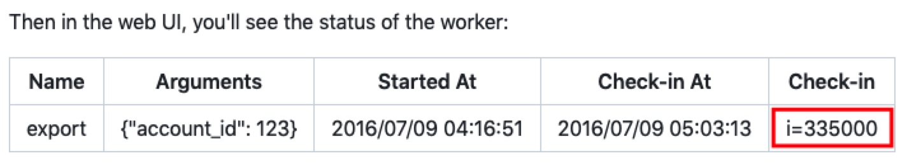
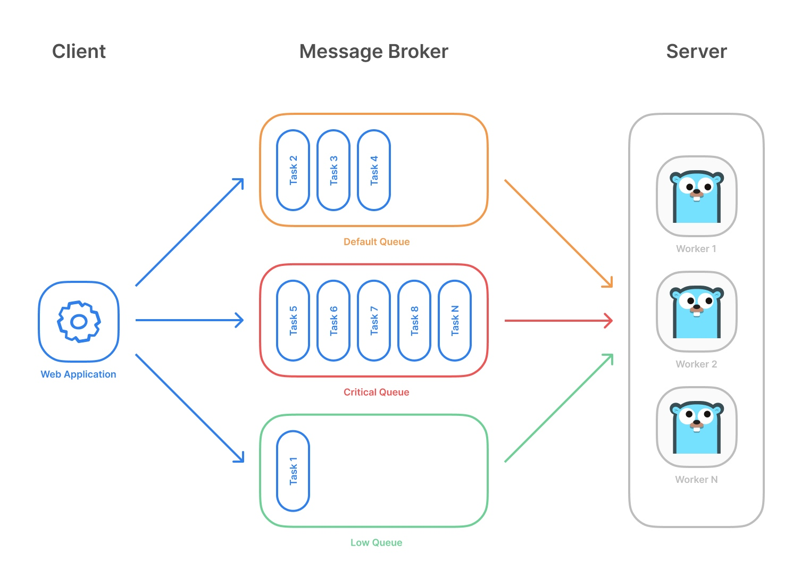

活动文档（任务进度、状态管理）技术开发实践

目录
任务是将静态文档转变成一个活动文档的重要方法，在协作文档系统中，应当将任务作为文档的一个辅助对象，参考操作系统中“进程管理”的相关思想进行设计开发。任务管理侧重于“时间”管理，包括任务启动结束、任务进度、任务状态、事件通知等等内容。本文介绍go语言环境下，基于Gocraft/work技术实现任务管理的相关开发实践方法。
基本思想
对于文档协作，可以看做在某个时间段内多人共同完成的一个任务。通过引入任务管理，以文档（做什么）为核心对象，以启动一个任务（什么时间做）的方式，来细粒度的控制协作过程。相关的技术有gocraft/work, watermill, NATS等。
其他需求
Since this is a background job processing library, it’s fairly common to have jobs that that take a long time to execute. Imagine you have a job that takes an hour to run. It can often be frustrating to know if it’s hung, or about to finish, or if it has 30 more minutes to go.
当后台运行一个时间相对较长的任务时（例如上传一个文档、导入数据等等耗时后台任务），需要及时的获知该任务的进度情况，甚至通过异步事件（消息）进行通知（例如通过watermill）。可以考虑这种场景下的相关解决方案。
技术调研
| 名称 | 特性 | star | github | 采用 |
|---|---|---|---|---|
| clockwerk | 简单 | 81 | ||
| clockwork | 简单 | 0 | ||
| go-cron | 9年前 | 183 | rk/go-cron | |
| gron | 4年前 | 691 | Roylee0704/gron | |
| jobrunner | 可集成到web框架，基于cron，支持在线监控（返回json状态），接口支持(Now, In, Every, Schedule) | 659 | bamzi/jobrunner | |
| jobs | 5年前（停止开发）(redis)(类似agenda) | 466 | albrow/jobs | |
| leprechaun | 不推荐 | 61 | ||
| scheduler | 简单 | 319 | carlescere/scheduler | |
| kala | 不推荐（非生产）（独立服务器） | 1.4k | ||
| kyoo | 任务队列（无限，后台服务） | 22 | ||
| gocron | 停止维护（支持lock） | 1.9k | Jasonlvhit/gocron | |
| cron | 较底层（基础库） | 5.6k | robfig/cron | |
| gcron | 国产 | https://github.com/gogf/gf | ||
| work | 高性能，高并发，大吞吐量 | 1.3k | gocraft/work | v |
任务管理（Gocraft/Work）
基本概念
| 类型 | 作用 | 参数 | 备注 |
|---|---|---|---|
| Client | Work REST API | namespace，redis.pool | |
| Enqueuer | 任务队列容器（redis数据库） | namespace，redis.pool | redis |
| Job | 代表一个任务 | Struct {name, id, args, enqueue_at, last_err} | 内部对象 |
| Q | 初始化一个任务的参数对象 | 类似于iris.Map | |
| Queue | 代表一个任务所相关的队列 | 同名job_name的队列信息 | |
| WorkerPool | 任务执行线程池 | ctx, concurrency, namespace, redis.pool | 主类 |
核心关系
- Gocraft-work概念：Job：一个具体的任务内容（工作状态），保存在Redis中
- Buffio概念：Work（或Worker）：一个具体的工作协程（工作者），处理一类Job，管理内存中的workpool
- 业务系统（Service）、Buffio系统、Gocraft系统的对接方法：
- Buffio概念：Action，对Job的进一步封装（工作内容），实现与业务系统的对接，业务系统会向Action中提供具体要求（参数）
- Gocraft概念：Context，Action中的内容会从Context中取出，送入middleware中进行执行
基本特性
gocraft/work lets you enqueue and processes background jobs in Go. Jobs are durable and backed by Redis. 实现了基于Redis的后台任务队列管理。主要特性如下：
- Fast and efficient. 快速而高效，号称最快。
- Reliable - don’t lose jobs even if your process crashes. 系统崩溃不会丢失任务。
- Middleware on jobs – good for metrics instrumentation, logging, etc. 支持钩子。
- If a job fails, it will be retried a specified number of times. 支持任务失效重试。
- Schedule jobs to happen in the future. 支持计划任务。
- Enqueue unique jobs so that only one job with a given name/arguments exists in the queue at once. 确保同名任务唯一性。
- Web UI to manage failed jobs and observe the system. 提供前端监控界面。
- Periodically enqueue jobs on a cron-like schedule. 支持周期任务。
- Pause / unpause jobs and control concurrency within and across processes。支持暂停和并发控制。
工作流程
1）准备阶段
To enqueue jobs, you need to make an Enqueuer with a redis namespace and a redigo pool. Each enqueued job has a name and can take optional arguments. Arguments are k/v pairs (serialized as JSON internally). 需要先创建一个队列（基于redis），每个任务（job）具有名字和参数。
- 连接redis
func Init_redis_db() {
cfg := config.Get_config()
path := strings.Join(
[]string{
"redis://",
cfg.Redisdb.Host,
":",
cfg.Redisdb.Port,
}, "")
__redis_pool = &redis.Pool{
MaxActive: 5,
MaxIdle: 5,
Wait: true,
Dial: func() (redis.Conn, error) {
cnn, err := redis.DialURL(path)
if err != nil {
log.Fatalf("init redis (%s) is failure, %v\n", path, err)
return nil, err
}
return cnn, nil
},
}
cnn := __redis_pool.Get()
__redis_db = &cnn
log.Println(tools.Green(tools.MethodOk()))
}
- 创建队列(enqueuer)
var (
Agenda_enqueuer *work.Enqueuer
)
func init_enqueuer() {
pool := redis.Get_redis_pool()
eqr := work.NewEnqueuer(constants.NODE_AGENDA_NAMESPACE, pool)
Agenda_enqueuer = eqr
}
2）注册job处理器
In order to process jobs, you’ll need to make a WorkerPool. Add middleware and jobs to the pool, and start the pool.
- 创建 workpool
var (
Agenda_worker_pool *work.WorkerPool
)
func init_worker_pool() {
redis_pool := redis.Get_redis_pool()
// Make a new pool. Arguments:
// Context{} is a struct that will be the context for the request.
// 10 is the max concurrency
// "my_app_namespace" is the Redis namespace
// redisPool is a Redis pool
worker_pool := work.NewWorkerPool(
*New_AgendaContext(),
10,
constants.NODE_AGENDA_NAMESPACE,
redis_pool)
// Add middleware that will be executed for each job
worker_pool.Middleware((*Context).Log)
worker_pool.Middleware((*Context).Find_manager_job)
worker_pool.Middleware((*Context).Find_manager_visitor)
worker_pool.Middleware((*Context).Find_check_timestamp)
Agenda_worker_pool = worker_pool
}
- 注册任务钩子（middleware)
type Context struct {
Handler_job service.JobServiceHandler
Handler_job_status service.JobStatusServiceHandler
Handler_table service.TableServiceHandler
Manager_job_uuid string
Manager_visitor_uuid string
Check_timestamp int64
}
// 导出方法（middleware）: 注意, 不能直接调用，由gocraft-work间接调用
func (ctx *Context) Log(job *work.Job, next work.NextMiddlewareFunc) error {
msg := fmt.Sprintf("Starting a work: %s", job.Name)
log.Println(tools.Green(msg))
ctx.Handler_job_status = service.New_JobStatusService()
ctx.Handler_job = service.New_JobService()
ctx.Handler_table = service.New_TableService()
return next()
}
// 要求参数中必须包括：manager_job_uuid
func (ctx *Context) Find_manager_job(job *work.Job, next work.NextMiddlewareFunc) error {
if _, ok := job.Args["manager_job_uuid"]; ok {
ctx.Manager_job_uuid = job.ArgString("manager_job_uuid")
if err := job.ArgError(); err != nil {
log.Println(tools.Red(tools.MethodError()))
return err
}
}
return next()
}
// 要求参数中必须包括：check_timestamp (int64)
// check_timestamp, 用于在运行任务时，
// 通过检查job的相关时间参数（例如start_at, end_at），
// 确认这个参数是否修改过，
// 如果该check_timestamp不一致，则任务直接返回（相当于取消任务）
func (ctx *Context) Find_check_timestamp(job *work.Job, next work.NextMiddlewareFunc) error {
if _, ok := job.Args["check_timestamp"]; ok {
ctx.Check_timestamp = job.ArgInt64("check_timestamp")
if err := job.ArgError(); err != nil {
log.Println(tools.Red(tools.MethodError()))
return err
}
}
//log.Println(tools.Green(tools.MethodOk()), tools.JsonInfo(job))
return next()
}
// 按照任务状态序列（JOB_status_xxx）定义多个对应的方法
func (ctx *Context) Handle_startup_job(job *work.Job) error {
params := iris.Map{
"job": *job,
}
rs := ctx.Handler_job.Get_job_by_uuid(ctx.Manager_job_uuid)
check_job := rs.Data["job"]
check_job_start_at := check_job.(mongo.Job).Start_at
if check_job_start_at.Unix() != ctx.Check_timestamp {
return nil
}
current_job_status := check_job.(mongo.Job).Current_status
if current_job_status != constants.JOB_status_published {
return errors.New("stat-up a job is error because the job current status is not " + constants.JOB_status_published)
}
rs = ctx.Handler_job_status.New_job_status(ctx.Manager_job_uuid, ctx.Manager_visitor_uuid)
the_job_status := rs.Data["job_status"]
the_job_status_uuid := the_job_status.(mongo.JobStatus).Job_status_uuid
new_status := mongo.JobStatus{
Job_status_uuid: the_job_status_uuid,
Job_status_name: constants.JOB_status_running,
Job_status_number: 3,
Create_at: time.Now(),
Start_at: time.Now(),
}
rs = ctx.Handler_job_status.Update_job_status_time_info(&new_status)
return nil
}
3）注册工作者调度器（WorkerScheduler，在Buffalo中又称WorkerManager）
参考（gobuffalo.io/en/docs/workers）对gocraft-work进行封装。
type Worker interface {
Start(context.Context) error
Stop() error
Register(work_name string, work_handler interface{}) *results.Result
RegisterWithOptions(work_name string, opts work.JobOptions, work_handler interface{}) *results.Result
PerformNow(action *Action) *results.Result
PerformAt(action *Action, at time.Time) *results.Result
PerformIn(action *Action, in time.Duration) *results.Result
// PerformEvery(Job) error
}
type WorkerManager struct {
Name string
Enqueuer *work.Enqueuer
Pool *work.WorkerPool
ctx context.Context
}
// Action: 作为 Worker 与 Controller 之间的中介桥梁
// Work: Worker 采用的术语
// Action.Job: Controller 采用，job_args 来自于业务
// work.Job: work 采用，job 为 gocraft/work 的内部类型
type Action struct {
Work_name string `json:"work_name"` // = work_name = work.Job.job_name
Job_args work.Q `json:"job_args"` // = Controller 传送的参数（含manager_job_uuid, manager_visitor_uuid）
}
4）创建并启动worker
启动后，Worker会从queue中抽取job，调用job处理器，进行处理
func Init_job_agenda() {
init_enqueuer()
init_worker_pool()
agd := schedule.New_WorkManager("Agenda", Agenda_enqueuer, Agenda_worker_pool)
Agenda = agd
_ = Agenda.Register(constants.AGENDA_startup_job, (*Context).Handle_startup_job)
_ = Agenda.Register(constants.AGENDA_submit_job, (*Context).Handle_submit_job)
}
// main.go
_ = job.Agenda.Start(context.Background())
5）业务处理
// controller
// Job任务入队
a_action := schedule.Action{
Work_name: constants.AGENDA_startup_job,
Job_args: iris.Map{
"manager_job_uuid": job_uuid,
"manager_visitor_uuid": manager_visitor_uuid,
"check_timestamp": the_now_at.Unix(),
},
}
rs = job.Agenda.PerformNow(&a_action)
特性说明
Context
Gocraft/work lets you use your own contexts. Your context can be empty or it can have various fields in it. The fields can be whatever you want - it’s your type! When a new job is processed by a worker, we’ll allocate an instance of this struct and pass it to your middleware and handlers. This allows you to pass information from one middleware function to the next, and onto your handlers. 用户可以根据需要定义自己的 Context。当一个Worker（协程）获得一个Job后，会创建一个Context实例，将其传送到Middleware和Handler中。
进度检测（check-ins）
To solve this, you can instrument your jobs to “checkin” every so often with a string message. This checkin status will show up in the web UI. For instance, your job could look like this:
func (c *Context) Export(job *work.Job) error {
rowsToExport := getRows()
for i, row := range rowsToExport {
exportRow(row)
if i % 1000 == 0 {
job.Checkin("i=" + fmt.Sprint(i)) // Here's the magic! This tells gocraft/work our status
}
}
}
相关接口
- Client implements all of the functionality of the web UI. It can be used to inspect the status of a running cluster and retry dead jobs.
type Client struct {
// contains filtered or unexported fields
}
func NewClient(namespace string, pool *redis.Pool) *Client
func (c *Client) WorkerObservations() ([]*WorkerObservation, error)
func (j *Job) Checkin(msg string)
type WorkerObservation struct {
WorkerID string `json:"worker_id"`
IsBusy bool `json:"is_busy"`
// If IsBusy:
JobName string `json:"job_name"`
JobID string `json:"job_id"`
StartedAt int64 `json:"started_at"`
ArgsJSON string `json:"args_json"`
Checkin string `json:"checkin"`
CheckinAt int64 `json:"checkin_at"`
}

计划任务（未来运行的任务）
enqueuer := work.NewEnqueuer("my_app_namespace", redisPool)
secondsInTheFuture := 300
_, err := enqueuer.EnqueueIn("send_welcome_email", secondsInTheFuture, work.Q{"address": "test@example.com"})
任务唯一性（任务参数动态更新）
you can provide your own key for making a job unique. When another job is enqueued with the same key as a job already in the queue, it will simply update the arguments.
enqueuer := work.NewEnqueuer("my_app_namespace", redisPool)
job, err := enqueuer.EnqueueUniqueByKey("clear_cache", work.Q{"object_id_": "123"}, map[string]interface{}{"my_key": "586"})
job, err = enqueuer.EnqueueUniqueInByKey("clear_cache", 300, work.Q{"object_id_": "789"}, map[string]interface{}{"my_key": "586"})
周期任务(Cron)
支持Cron语法
并发度控制
You can control job concurrency using JobOptions{MaxConcurrency: }.This works by putting a precondition on enqueuing function, meaning a new job will not be scheduled if we are at or over a job’s MaxConcurrency limit. The default value is 0, which means “no limit on job concurrency”.（默认没有上限）
工作原理
持久化
- When jobs are enqueued, they’re serialized with JSON and added to a simple Redis list with LPUSH. 每个任务信息以JSON形式保存在Redis队列中。
- Jobs are added to a list with the same name as the job. Each job name gets its own queue. 同名任务保存同一个队列中。
调度算法（基于队列优先级从相应的队列中选择一个任务调度执行）
- Each job lives in a list-based queue with the same name as the job.
- Each of these queues can have an associated priority. The priority is a number from 1 to 100000.
- Each time a worker pulls a job, it needs to choose a queue. It chooses a queue probabilistically based on its relative priority.
- If the sum of priorities among all queues is 1000, and one queue has priority 100, jobs will be pulled from that queue 10% of the time.
工作协程
- WorkerPools provide the public API of gocraft/work.
- You can attach jobs and middleware to them. （绑定任务和中间件）
- You can start and stop them. （启停控制）
- Based on their concurrency setting, they’ll spin up N worker goroutines. （创建协程）
- Each worker is run in a goroutine. It will get a job from redis, run it, get the next job, etc. （每个工作者生成一个独立的不相关的协程，从redis队列中获取一个任务，进行处理）
- Each worker is independent. They are not dispatched work – they get their own work.
支持任务失败重试
暂停与重启任务
- You can pause jobs from being processed from a specific queue by setting a “paused” redis key (see redisKeyJobsPaused)。Conversely, jobs in the queue will resume being processed once the paused redis key is removed。
健康检查（基于轮训）
后端实现
后端实现健康检查的方法可以考虑两种方式：
- 基于gocraft/work的check-in机制，提供一个 Health HTTP API
- 基于gocraft/health，启动一个server，提供相应的 Health HTTP API
前端实现
采用VUE轮训后端提供的 Health HTTP API
分布式任务管理
Asynq is a Go library for queueing tasks and processing them asynchronously with workers. It’s backed by Redis and is designed to be scalable yet easy to get started. Task queues are used as a mechanism to distribute work across multiple machines. A system can consist of multiple worker servers and brokers, giving way to high availability and horizontal scaling.

总结
在实现5W1H协同文档的系统中，文档对象（What）是核心对象，其他辅助因素（例如时间控制等）都是辅助对象。尤其要注意，核心对象单独构建一个微服务，其他辅助因素或者单独开发为独立的微服务，或者均作为授权因子统一实现在权限微服务模块中。对于时间因素，可以考虑实现为一个独立的微服务，既可以实现将静态文档转变为一个活动文档，也可以实现对后台特殊任务的监控管理，并分别提供基于GATT图（任务管理）、日历图（日程管理）、进度条（健康检查、进度监控）等形式的前端管理界面。
参考文献
- https://github.com/gocraft/work
- https://gobuffalo.io/en/docs/workers
- https://www.coder.work/article/202616
- https://github.com/gobuffalo/gocraft-work-adapter/blob/master/gwa.go
- https://github.com/gocraft/health
- https://github.com/straightdave/vue-polling
- https://renatello.com/vue-js-polling-using-setinterval/
- https://github.com/hibiken/asynq